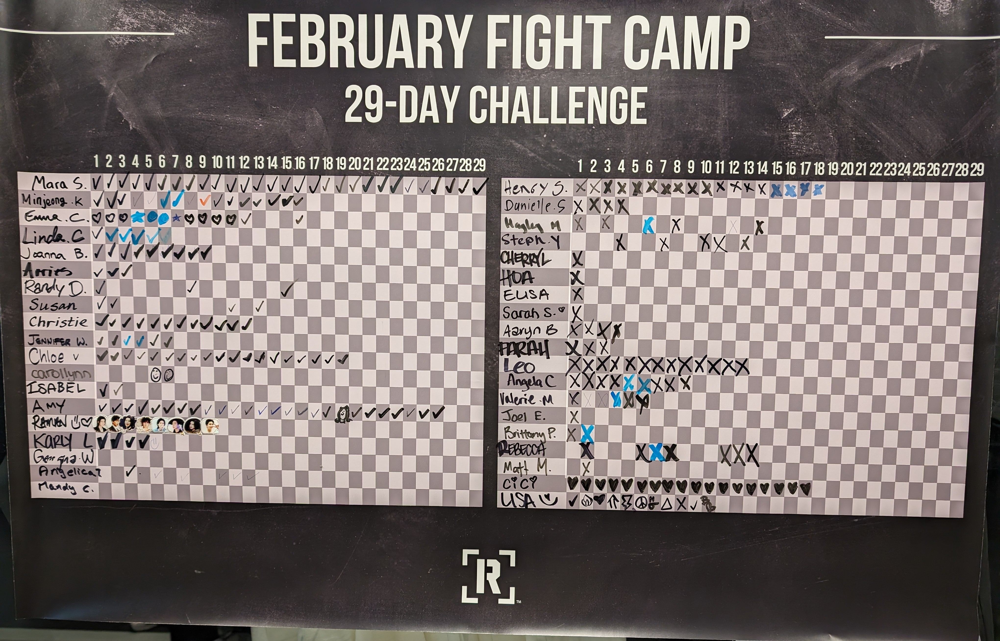
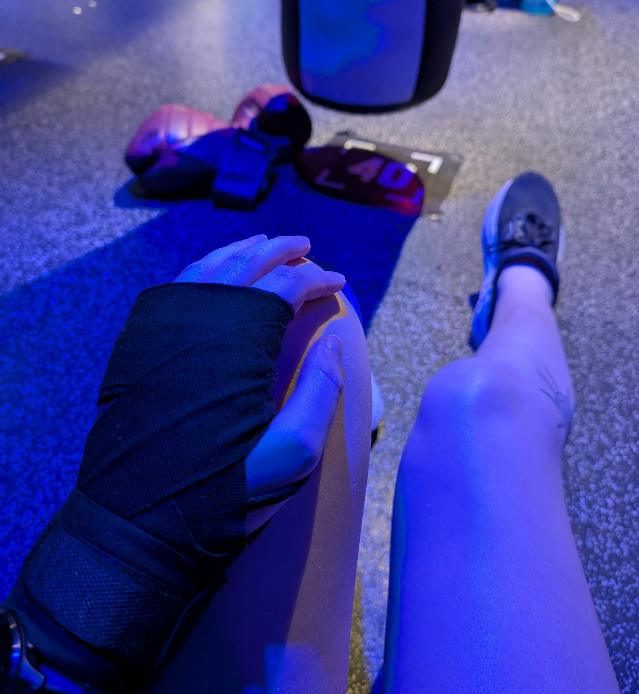
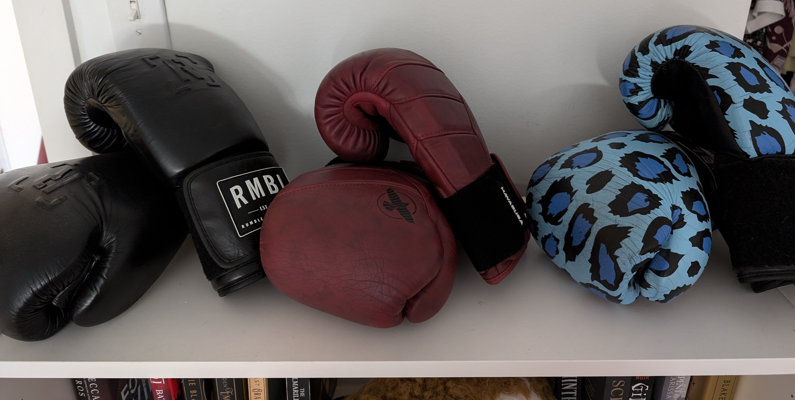

March 19, 2025
Mara Solen
At the start of 2023, I had been doing very little physical activity for years. I also had a looming medical procedure that I knew would happen within the next couple of years that was making me nervous. I decided to try to get fit, since that was basically all I could do to improve my recovery. I started with trying a gym, which I hated (as I always had previously). I had tried intramural soccer but found that overly competitive for a casual sport. I then decided to try Rumble Boxing in Mount Pleasant since it was not far from where I lived, offered a free first class, and seemed fun.
It was fun! Super fun! The music was great, the exercise felt good, and being in a group fitness environment was really motivating for me. I gradually started going more and more until I was going many times a week. Aside from a couple of minor injuries and my medical procedure (which went fine, probably because of my fitness!), I've continued going to Rumble since then, and I'm up to about 450 classes now.
I've been doing fewer classes in the last half year or so. This is partially due to my surgery, but also because getting fit again has given me more confidence which has enabled me to do other sports. Early last year I got back into running, and I went to a bunch of run clubs. I joined a women's intramural soccer team in the fall and that has been so much fun. In a couple of weeks I'll be in a new volleyball league, a sport I've almost never played before but had a lot of fun with when I tried it late last year!
I was first to complete the 2024 February Fight Camp Challenge! This picture is from February 16, meaning I did 29 classes in 16 days.
I got a Garmin watch to track my fitness in the fall, and it's been interesting to see how my calories burned and average heart rate have varied over time and in different classes. I typically find that after a break from exercise (even only a week), I burn more calories and have a higher heart rate at the first class back. Keep in mind that sometimes the watch misreads things, leading to spikes or dips in recorded heart rate or calories burned that aren't accurate.

Since spring 2023 I've been taking bag 40 (which used to be bag 34), the instructor bag in the middle of the room.
Even though I'm getting more into other sports, I still want to get back to boxing more often, maybe 3-5 classes per week. I typically attend evening classes during the week, most often the 5:10pm classes on Wednesday and Thursday, with quite a few 6:20pm classes on Monday and Wednesday as well. I've attended a variety of weekend morning classes quite a few times as well, including Chris' 12:50pm on Saturday and Alix's 9:20am, Aimee's 10:25am, and Dexter's 11:30am on Sunday.

My first gloves were the blue leopard print Rumble gloves on the right, but I boxed so much I broke them! Now I use my red Hayabusas (in the middle). I got the black Rumble gloves for free from a promotion and I let my friends borrow them when they join me for a class.
Since I got my watch, I've also been keeping track of which instructors are teaching the classes I go to. Keep in mind that this data is only since I got the watch in the fall and that I've done lots of classes with instructors that aren't shown here as well.